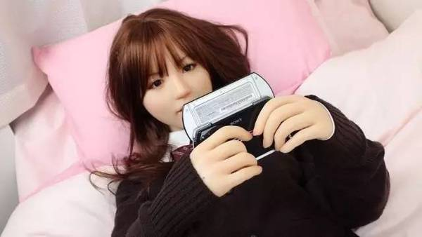
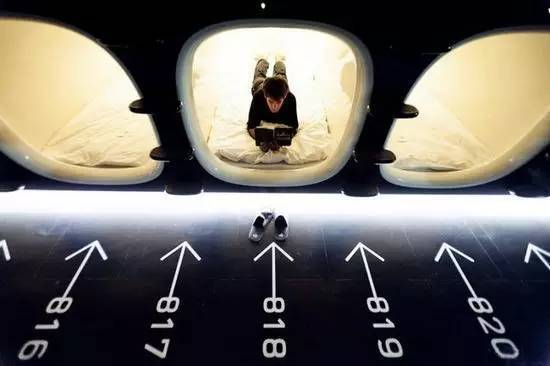

距离第一届日本成人VR展仅两个月，第二届展览又开幕了，之所以这么密集，是因为第一届被蠢蠢欲动的青年男女挤爆了场地，开场15分钟就被政府紧急叫停。日本历来性文化开放，宅男们越来越热衷于虚拟情色，现在的日本正在经历一个年轻男女都拒绝恋爱的时期。
从上世纪90年代起，为了挽回出生率，日本和儿童相关的公共支出几乎每年都在增加，各种鼓励生育的政策不断出台。
政府甚至承诺养孩子，每个日本孩子15岁前每月发1.3万元儿童补贴；给家长发放生育和入学祝贺金，生得发得越多；兄弟姐妹越多上幼儿园学费越便宜；大公司给员工开3年产假制度，但，这些都没用。
日本总务省曾在2015年5月公布过一次人口统计数据，到2015年4月1日为止，14岁以下的儿童数量比2014年减少了16万，儿童数量连续34年下降。在联合国人口统计年鉴里，在世界上人口超过4000万的30个国家中，日本是儿童比例最低的国家。
随着日本经济环境恶化，对年轻人来说，在大都市中的生活成本越来越高，而由于整体学历提高，竞争压力也越来越大，政府这点福利无法抵消年轻人遇到的生存压力。对于年轻人们来说，没有精力结婚生娃，这会进一步增加生存压力。有这时间和闲钱，不如去玩游戏、逛成人展或歌舞伎町！
于是，年轻人连恋爱都不想谈了。2015年曾有日本婚恋公司做过调查，发现日本年轻20出头的有74.3%都是单身。同一年对7000名年轻人的调查显示，20多岁的单身者中有40%的人是因为不想谈恋爱，原因是“很麻烦”，他们更愿意把时间花在自己的兴趣爱好上。
连近些年的日剧和日本电影都有去爱情化的趋势。当韩剧还在谈论家长里短和狗血爱情的时候，日本电视剧开始思考职场和人生，出现大量探索爱情之外的领域的电视剧——刑侦、法医、公司斗争等等。也有《深夜食堂》之类的电视剧，关注市井小民生活在大都市中的孤独感。就是出现爱情线如《昼颜》，也是讨论婚姻的伦理。
电视剧和电影中的年轻人，大多在探索个人成长和人生意义。如《垫底辣妹》之类的青春电影，男女感情也多是到“友达以上，恋人未满”为止。
不谈恋爱不生娃，日本这些年轻人哪来的底气？
生活带来的压力，瓦解了日本年轻人恋爱生娃的动力。但大多数日本人并不是无欲无求，之所以这样，是因为高度商业化满足了人情感的多重需求。
在日本，恋爱中生理和心理的欲望都可以通过商品来满足。普通的如性需求，脑洞大开的如虚拟女友、情感培养，恋爱中的每部分感受，都被日本人细致地拆分、制成商品、贩售。
在日本，性是可以随处解决的。
AV降低了年轻人对性的神秘感，片子和种类数不胜数。此外，情趣用品的种类没有你用不到只有你想不到；成人杂志随手就能买到，超市都设有展柜。一些变态需求也可以被满足——日本街头的AV专卖店里，有少女“原味内裤”贩卖，甚至附有主人的年龄、工作甚至照片等个人信息。
如果想谈情说爱，获得心理安慰？宅男可以买少女服务或在游戏机上养一个虚拟女友。甚至诞生了一种“纯情陪睡专门店”，在陪睡专门店里，店面被隔成一间间半开放的小隔间，铺着榻榻米和枕头。
客人进去不久，一名穿着睡衣的少女进入隔间，客人便可枕在少女的手臂上，与少女聊天、静静对视，或者安然入睡。如果愿意，你还可以多付一笔钱让少女换上指定制服。最后，还可以枕在少女的大腿上，由少女给你掏、耳、朵——曾有外国人体验过后感慨：感觉老妈和女友在此刻合为一体。

想谈情说爱，还可以在游戏机里养成一个美少女。冰山美人或者热情萝莉、各种身材、各种性格的虚拟女友任你选，她们的性格从一而终，百依百顺，哪像现实生活中的女人——脾气捉摸不定，还得花钱花心思哄着。
只要肉体欢愉而不愿意承担责任，这是日本年轻人越来越热衷的情感态度。
连日本的家庭主妇们也逐渐的开始转变，几年前，还在抱怨丈夫回家后对自己缺乏关心和互动，现如今越来越多主妇巴不得老公离开家，给自己留点空间处理自己的事情，甚至利用各种社交偷情软件疯狂出轨，希望邂逅下一段、再下一段激情。
于是，日本的宅男宅女越来越多，他们从惯常的日本文化里解脱出来，谈论爱情的人越来越少了。
集体崇尚孤独和个体自由的日本人，大都会越发冷漠和孤独，电车上只有上了年纪的欧巴桑会聚在一起叽叽喳喳聊天，年轻人则沉浸在自己的手机里，不仅不谈论爱情，也越来越少谈论和他人的关系。
上世纪80年代任天堂打造出一个使人沉迷的电子世界后，科技和互联网孕育了日本的初代“阿宅”，便是如今这代年轻人。
O2O在日本并不发达，没办法足不出户解决各种生活上的问题。所以“不出门”并非日本宅的精髓，个体感和孤独感才是——一个人生活，不仅物质和情感上依旧不会感到空虚，反而让人找到了个体独立和个人发展的方向，还能逃避家庭和爱情带来的责任。
这是一个循环：科技发展孕育了宅文化和阿宅们，宅群体的壮大，科技和互联网变生出许多满足阿宅需求的服务，最后，宅着的生活越来越无可挑剔，更多的人便乐于脱离传统观念，疏离他人而成为阿宅。
正是因为有这么多的人宅着，整天胡思乱想，日本才会诞生诸如“吹面筷子”、“自动往面里倒芝士粉装置”、“溜手机机器人”之类脑洞大开的怪异发明。
沉浸在自己的世界不愿意被打扰，阿宅们己所不欲勿施于人，便生出日本人的“不打扰”哲学：为解决年轻人午睡而修建的胶囊旅馆，把人一个个隔开来休息。公共场合不允许私自拍摄。

连自杀，也得选在交接完工作的4月，还不能死在出租房，因为房子成了凶宅会害房东租不出房子。他们还得到指定的自杀地点结束生命，以方便警方和家人收尸。卧轨自杀的人会自觉选末班车，怕影响其他人上班。这些这在日本已经形成社会规范，人们习以为常。
不打扰的处事哲学是日本社会的高度冷漠的体现。工作、性、游戏占据了日本人生活的大部分，活着就在奔波劳碌着，别人的生死和情况我不关心，也没空、没耐心去处理恋爱中需要处理的复杂问题，想想就头疼。
社会中人和人之间疏离至此，一旦年轻人认定了恋爱和生娃没有意义，一个人过也没什么差，所有为鼓励生育和鼓励恋爱的措施，也便通通难以撼动他们单身的决心。
在《人类简史》中，提出了一种质疑，到底是人类驯服了小麦，还是小麦驯服了人类？
从人类的角度上来看，是自己主导改良、培育了小麦。但是，从进化的角度看，小麦操纵了人类。为了小麦不断的耕地、播种、灌溉、收割等，越来越依赖小麦，人类是被小麦奴役了。从此，再也离不开小麦了。其实，科技也是如此。